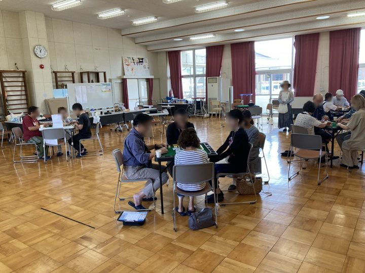
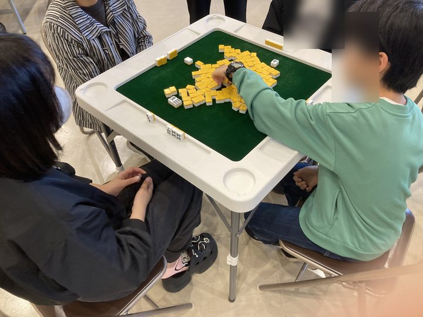
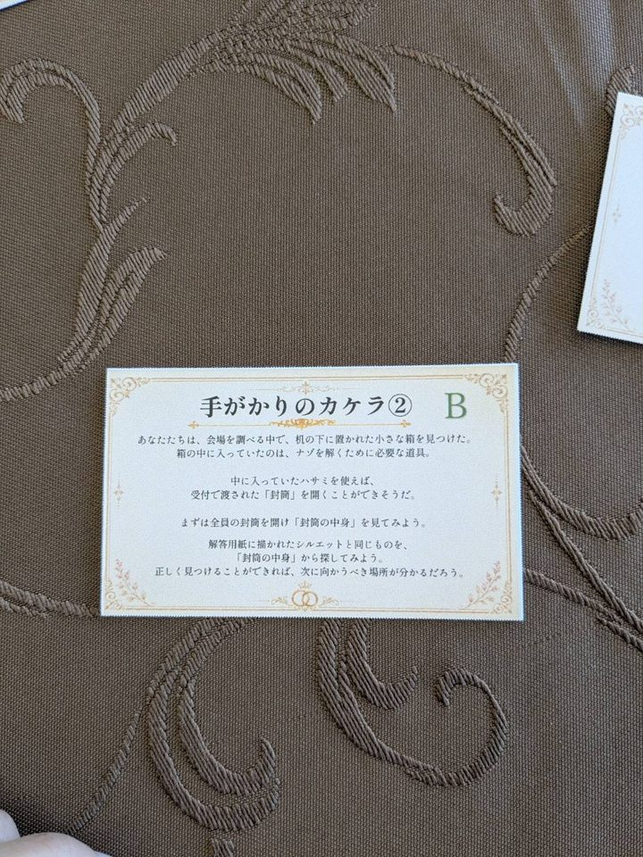
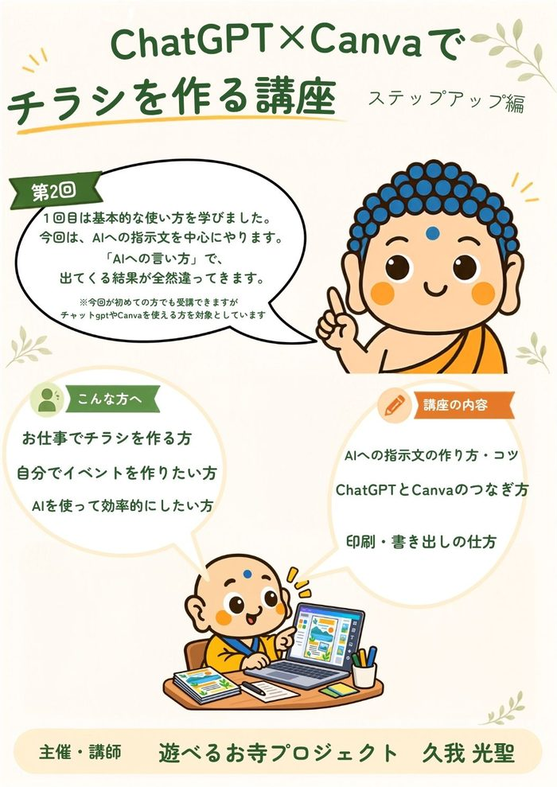

RESULTS
実績
開いてきた場と、お受けした依頼です。くわしい様子は、活動報告（note）に書いています。
■ 健康麻雀
 ■ 健康麻雀公民館の健康麻雀講座（全5回）2026年7〜9月｜市の広報での募集に、定員8名のところ40名以上の申し込み。12名・3卓に広げて開き、いまは月2回の講座に。
■ 健康麻雀公民館の健康麻雀講座（全5回）2026年7〜9月｜市の広報での募集に、定員8名のところ40名以上の申し込み。12名・3卓に広げて開き、いまは月2回の講座に。 ■ 健康麻雀月1回の健康麻雀会（高島市今津町）2026年9月｜数人から始めて、1回で24人。会場に置ける5卓（20人分）を超えました。
■ 健康麻雀月1回の健康麻雀会（高島市今津町）2026年9月｜数人から始めて、1回で24人。会場に置ける5卓（20人分）を超えました。
■ 健康麻雀健康麻雀大会2026年8月｜初めての大会の企画・運営。12名・3卓。
■ 健康麻雀フェスタのブース2025年11月｜麻雀を知らない方も遊べる「4人で4枚麻雀」。■ 座禅

■ 謎解き
 ■ 謎解き公民館の、子ども向け謎解き脱出ゲーム2026年2月｜市と共催。定員30名に29名。中学生のボランティア8名と一緒に運営しました。
■ 謎解き公民館の、子ども向け謎解き脱出ゲーム2026年2月｜市と共催。定員30名に29名。中学生のボランティア8名と一緒に運営しました。
■ 謎解き市の事業の、婚活謎解きイベント（ホテル会場）2026年6月｜委託を受けた団体から、企画・実施を担当。■ 子どもの遊び

■ 講座

■ つくる
■ つくる地域のお店の公式LINE2026年9月｜開設からメニューまで、その日のうちに。 ■ つくる長善寺のホームページ2026年6月｜お寺の案内・座禅体験・永代供養墓。英語版も。
■ つくる長善寺のホームページ2026年6月｜お寺の案内・座禅体験・永代供養墓。英語版も。
■ つくる長善寺のホームページ2026年6月｜お寺の案内・座禅体験・永代供養墓。英語版も。
■ つくる講座・催しのチラシChatGPTとCanvaで、自分で作っています。